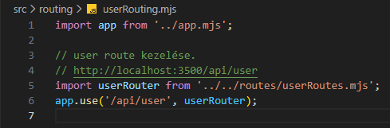

Regisztráció kezelése - userRouting.mjs
Regisztráció kezelése - userRouting.mjs
Ebben a részben szerkesztjük az src/routing mappában a userRouting.mjs állományt, amelyben összekötjük a /api/user route-ot a logikával.
-
Szerkesszük a
userRouting.mjsállományt.-
import app from '../app.mjs';- azappobjektum alapértelmezett beimportálása. -
import userRouter from '../../routes/userRoutes.mjs';- auserRouterfüggvény alapértelmezett beimportálása. -
app.use('/api/user', userRouter);- ausemiddlewaresegítségével a/api/userroute-hoz csatoljuk auserRouterfüggvényt.
Azaz bármikor is küldünk egyhttp://localhost:PORT/api/userlekérést a webszervernek, akkor az ehhez tartozó logikával tér vissza.
-
-
Szerkesszük újra a
server.mjsállományt. és

-
await import('./routing/userRouting.mjs');- importáljuk be auserRouting.mjs-ben létrehozottpromise-t.
-